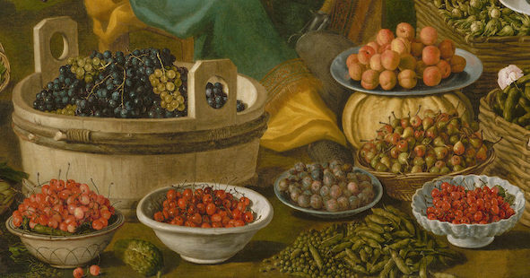

Fruit Wine

Description
Domestic workers and householders in seventeenth-century England often recorded their tried-and-true culinary and medical recipes in manuscript notebooks known as receipt or household books. This recipe for fruit wine comes from a medical manuscript in the Folger Library that contains a number of recipes for beverages like mead, wine, cider, and chocolate, all of which were also understood to have certain health benefits. The fruit medley in this recipe makes the most of summer's bounty.
Ingredients
- 3 pounds of berries, such as:
- gooseberries
- currants
- raspberries
- cherries
- 1 quart of boiled water
- 1 pound of sugar
Method
- Bruise the fruits and steep them for 24 hours in water, stirring intermittently.
- Strain the liquid through "a hayre sive" to remove the pulp.
- Add the sugar to the clear liquid and stir to dissolve.
- Pour the mixture into an "earthen pott" with a stopper, closing tightly, and let stand "for a fortnight or 3 weeks."
- After the specified time has elapsed, bottle the wine and after 3 months, "it will be ready to drinke and keepe [for] 12 months."
Notes
- hayre sive
- A hayre sive or hair sieve is a fine sieve made of haircloth, that is, the hair of horses or camels. A modern equivalent might be a fine mesh sieve or cheesecloth.